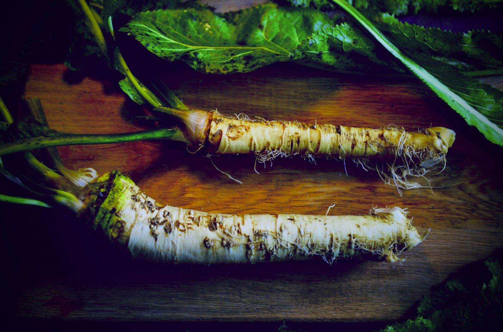
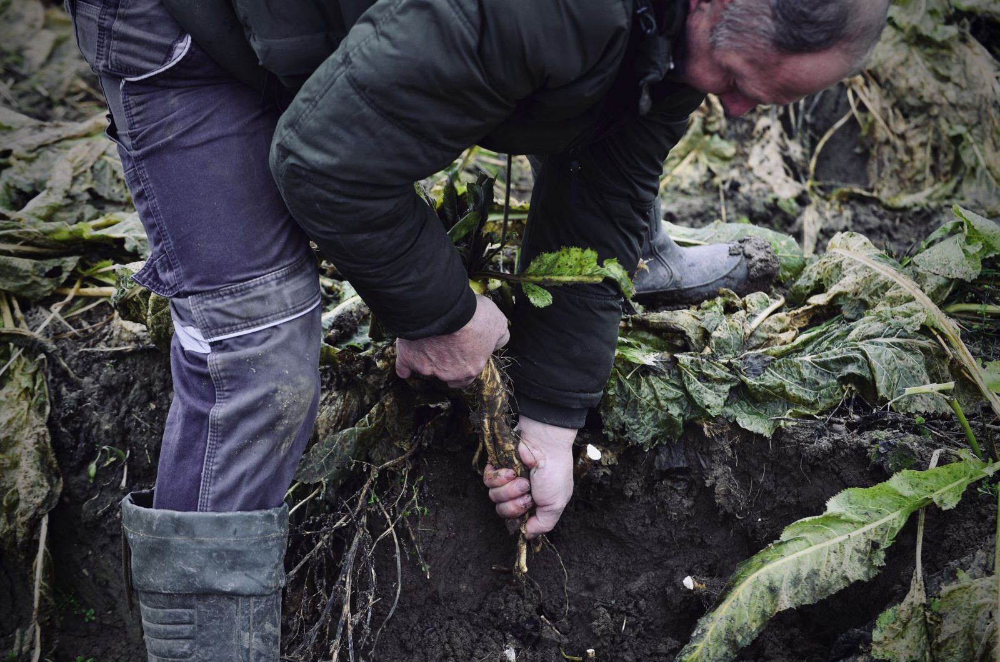

{{cur.tag}}
{{cur.title}}
{{cur.text}}
Křen patří k českému stolu stejně neodmyslitelně jako pivo do hospody. Přesto jsme se za posledních dvacet let stali závislými na dovozu. Od roku 2022 ho proto vracíme tam, kam patří – na česká pole.

Štiplavá esence české kuchyně – perfektní k uzenému, šunce i grilování. Pěstujeme ho na farmě Český chřest na Mělnicku, kde se nám už podařilo vzkřísit český chřest.
Vypěstovaný v Hostíně u Vojkovic, ne dovezený z druhého konce Evropy. Chceme, aby Česko bylo v křenu znovu soběstačné.
Řízná chuť pochází z hořčičných olejů. Rostlina si je vytváří jako přirozenou obranu proti škůdcům.
Křen je bohatý na vitamin C a je zdrojem vlákniny. [OVĚŘIT znění s výživovými údaji na etiketě]
Od listopadu 2023 je náš křen k dostání v obchodních řetězcích, které podporují české potraviny.

Pár základních receptů, se kterými náš křen zazáří, a k tomu nové recepty od kuchařek, které náš křen vyzkoušely.

Na farmě Český chřest v Hostíně u Vojkovic jsme se v roce 2022 rozhodli vrátit křen domů. Pěstujeme ho tam, kam odjakživa patří, a chceme, aby si znovu získal místo na výsluní české kuchyně.